0开始之前
「音视频解析」是一个 Windows 桌面工具：长视频支持爱奇艺、腾讯视频、优酷、芒果TV，短视频支持抖音、B站、AcFun、红果短剧、快手，音乐支持酷我、酷狗、QQ音乐、网易云、汽水音乐。
1复制某一集的网页链接
2粘贴到软件里
3点「解析播放」
- 软件只做链接解析和播放，不存储、不转码、不分发视频。
- 解析线路来自公开的第三方接口，可能随时失效；失效时换一条线路即可。
- 会员内容建议先在软件内置的平台窗口里登录一次，之后解析会更稳定。
- 想离开软件找剧也可以：点顶部平台卡片，平台官网会直接开在软件里。
第一次用，建议按顺序看：主界面 → 粘贴链接 → 选集 → 观看历史。遇到问题直接翻到最后一节。
1认识主界面
软件打开后只有一屏，常用的东西都在这一屏里。先认清这几个区域，后面操作就不会迷路。
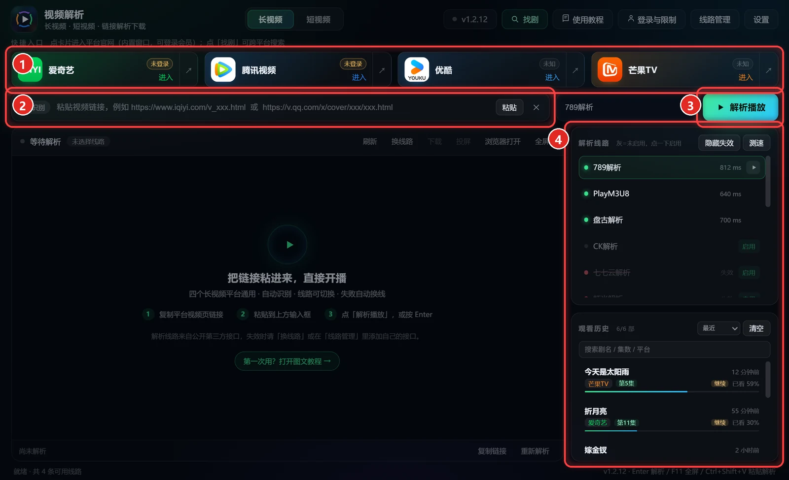
① 平台快捷入口 ② 链接输入框 ③ 解析播放 ④ 线路与观看历史（中间是播放画面）
- ① 点平台卡片进入官网找剧；右上角「找剧」可以跨平台搜索。
- ② 粘贴视频页链接，软件会自动识别平台，右侧的线路一般不用改。
- ③ 点「解析播放」开始；也可以直接按 Enter。
- ④ 解析成功后画面出现在这里，下载、全屏、换线路按钮都在播放区右上角。
- ⑤ 右边是解析线路和观看历史；底部状态栏显示当前状态和版本号。
窗口太小时，可以按 F11 或点右上角「全屏」；播放时页面会自动滚动，把大画面留给视频。
2粘贴链接解析
最常用的方式：在浏览器里打开任意一集，复制地址栏链接，回到软件粘贴。
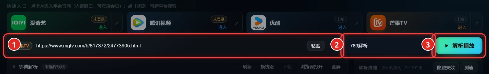
① 粘贴链接，自动识别平台 ② 选解析线路 ③ 点「解析播放」
- 复制的必须是某一集的播放页链接，不要复制平台首页或搜索页。
- 链接粘贴后，左侧标签会显示识别到的平台，比如「芒果TV」。
- 线路默认用当前选中的一条；不确定就保持默认，失败会自动换线（可在设置里关闭）。
- 一直转圈或黑屏：点播放区右上角「换线路」，软件会按顺序试下一条。
也可以直接按 Ctrl + Shift + V 把剪贴板里的链接粘贴并解析，不用先点输入框。
3内置浏览器找剧 · 自动解析
不想来回复制链接，就直接在软件里点平台卡片找剧。点开某一集，软件会自动把这一集送去解析。
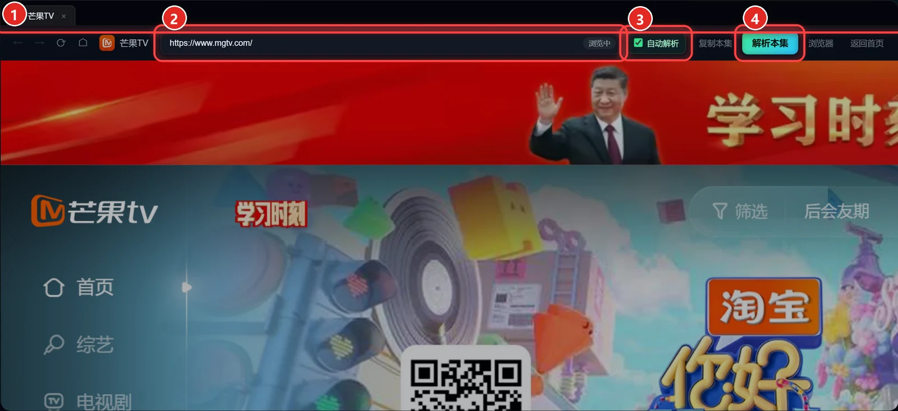
① 平台标签页 ② 地址栏/前进后退 ③ 自动解析开关 ④ 解析本集
- 点顶部任意平台卡片，官网会开在软件里；登录状态会保留，会员只需登录一次。
- 点开具体某一集后，上方会提示「正在解析」，画面自动出现在主界面。
- 每个平台的「自动解析」开关是分开记忆的；不想自动跳转可以单独关掉。
- 地址栏可以直接输入网址；Alt + ← / → 后退、前进，F5 刷新。
遇到登录、支付或授权页面时，软件会单独弹一个小窗，不会打断当前播放。
4选集与自动连播
解析成功后，视频下方会出现整部剧的选集。当前这一集是高亮的，点任意一集就能切换，不用再回平台页面。
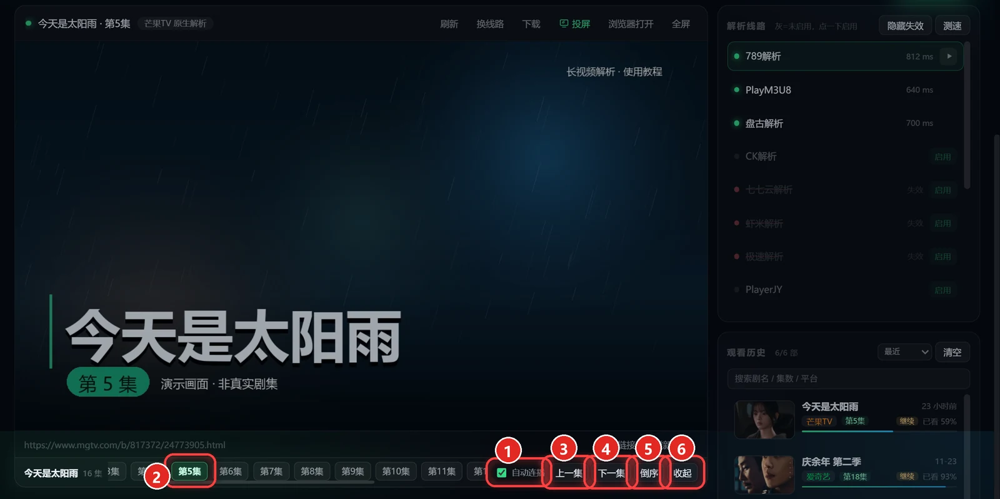
① 自动连播 ② 当前集高亮 ③ 下一集（旁边是上一集） ④ 播放区右上角的刷新 / 换线路 / 下载 / 全屏
- 「自动连播」默认开启：这一集播完会自动播放下一集，内置播放器和网页线路都支持。
- 用键盘也能换集：Ctrl + ← / →，或者 [ / ]。
- 选集可以切「正序 / 倒序」，也可以「收起」，给视频留出更大的画面。
- 选集列表会记住，下次从观看历史点回来还能直接换集。
如果不想自动连播，取消勾选「自动连播」即可；这个设置会记住，下次打开还是关的。
5观看历史：一部剧只记一条
观看历史现在按作品记录：同一部剧只保留一条，记的是你最近一次看到的集数，以及这一集看到了百分之多少。之前看完的集数不再重复占位置。
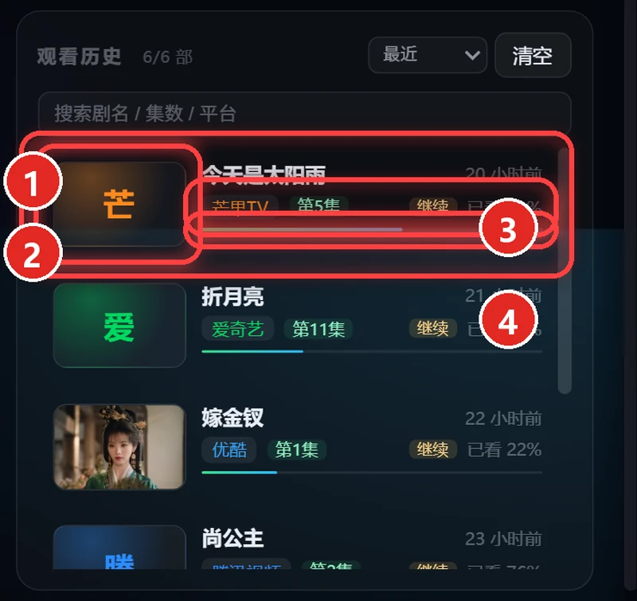
① 每部剧一条：最近集数 + 进度 + 「继续」 ② 搜索 ③ 排序 / 分组
- 点一条记录，会直接打开最近看的那一集，并从上次的进度继续。
- 进度每隔几秒自动保存；网页解析线路也会记录进度。
- 搜索框可以按剧名、集数或平台过滤；排序支持「最近」「继续观看」「按平台」。
- 单条记录可以删除，右上角「清空」会清掉全部历史。
看完一集后记录会更新到下一集；如果这一集已经看完（进度 96% 以上），点记录会从头开始。
6解析线路与体检
线路决定视频从哪里取。同一部剧可能有几条线路都能用，也可能有的已经失效。
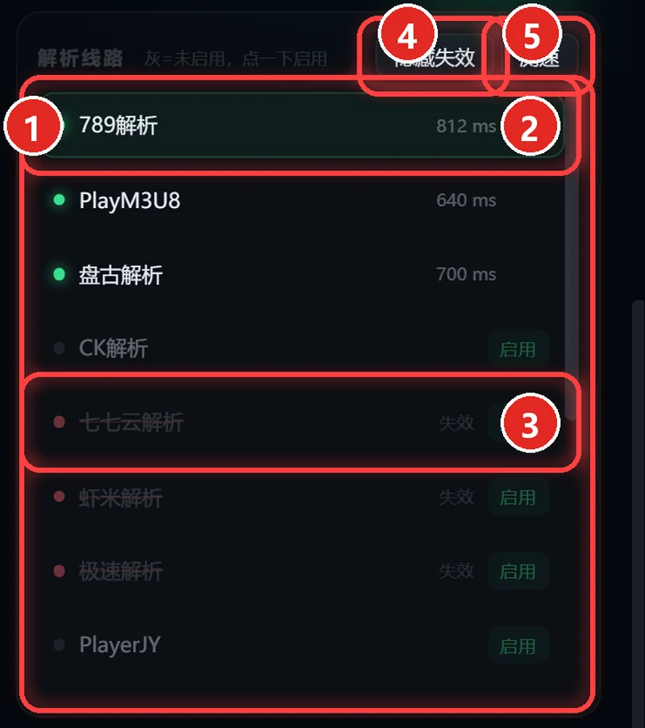
① 线路列表：绿点已启用，灰点未启用，红色「失效」是体检失败 ② 隐藏失效 / 测速
- 灰色的是未启用，点一下就能启用；越靠前的线路会越早被尝试。
- 软件启动后会在后台体检线路，失效的会划线标记，也可以一键隐藏。
- 「线路管理」里可以增删改线路、单独测试、在线更新，或者恢复内置线路。
- 建议只保留自己常用的 2–4 条，顺序按成功率排。
「测速」结果只代表当前网络下接口能不能访问，不代表一定出画面；以实际播放为准。
7下载到电脑
内置播放器能拿到的视频流，可以点「下载」保存到电脑。
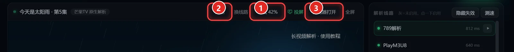
① 下载按钮（按钮上显示进度，再点一次取消）
- 下载按钮上会显示百分比；下载过程中再点一次可以取消。
- HLS 分片会自动合并成一个文件，不需要额外装 ffmpeg。
- 在「设置 → 播放 → 下载 / 离线」里可以打开下载目录。
- 网页解析线路（第三方解析页）拿不到真实地址，不能下载；会员加密内容也不支持。
下载目录优先用程序安装目录旁的「音视频解析下载」文件夹（老用户沿用「视频解析下载」，更新 / 卸载不会删）；安装位置不可写或系统安全软件拦截写入时，会自动改用系统下载目录或软件配置目录里的 downloads。
8全屏与键盘快捷键
点播放区右上角「全屏」或直接按 F11，窗口会铺满屏幕并进入影院模式：顶部工具栏变淡，把鼠标移到屏幕顶部才会出现。
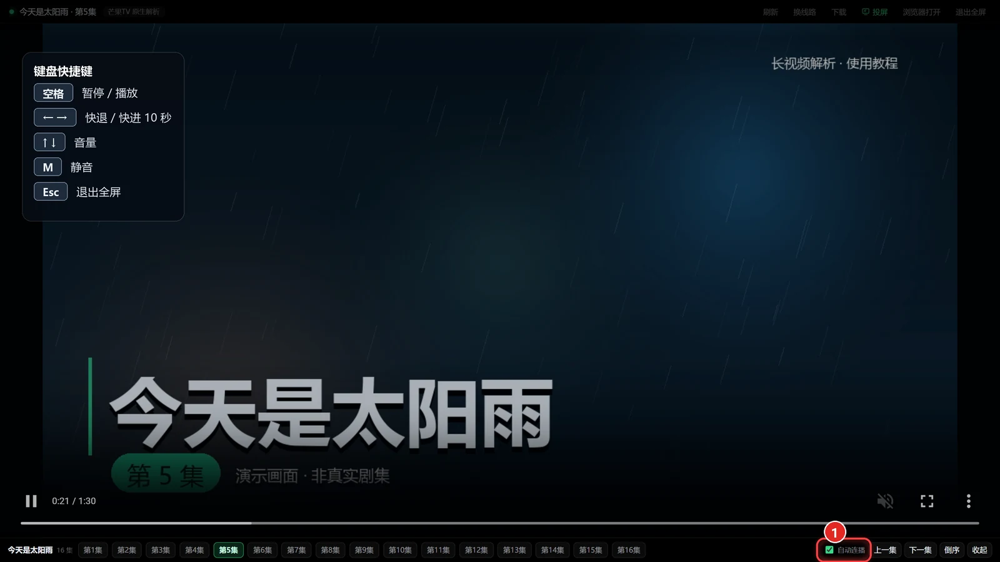
① 全屏时「自动连播」同样生效；左下角是键盘快捷键
空格暂停 / 播放
←→快退 / 快进 10 秒
↑↓音量
M静音
Esc退出全屏
F11切换全屏
- 全屏后键盘同样可用：空格暂停、左右方向键快退快进、上下方向键调音量。
- 网页解析线路（解析页里的播放器）也支持这些键，不需要先用鼠标点一下画面。
- 视频播完会自动播放下一集（「自动连播」勾选时）。
- 如果视频本身进入了网页全屏，先按 Esc 退出网页全屏，再按一次退出软件全屏。
全屏时顶部工具栏只是变淡了，鼠标移到屏幕上边缘就会重新出现，可以点「换线路」或「下载」。
9设置、更新与常见问题
右上角「设置」里可以调整播放和更新行为；「关于」页能打开配置目录、日志目录和项目主页。
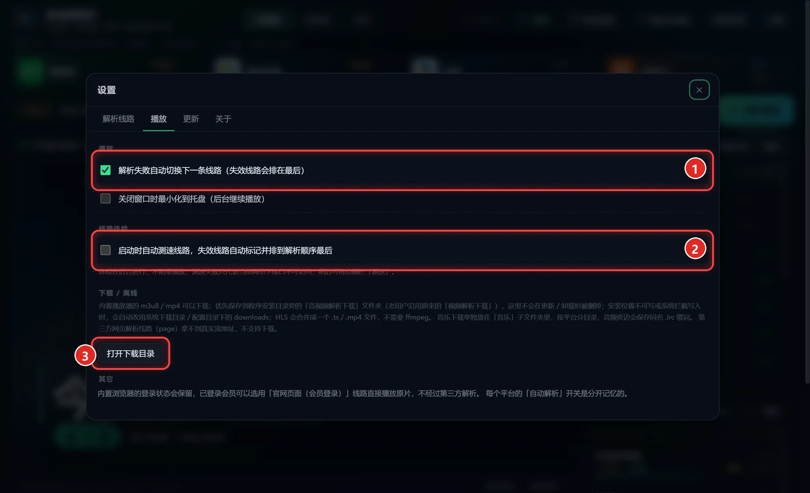
① 解析失败自动换线 ② 启动时自动测速线路 ③ 打开下载目录
- 解析失败自动换线：一条线路失败会自动尝试下一条，建议保持开启。
- 关闭窗口时最小化到托盘：后台继续播放/下载，双击托盘图标恢复窗口。
- 启动时自动测速线路：失效线路会被标记并排到最后，不阻塞播放。
- 检查更新：设置 → 更新，可以手动检查新版本；软件启动时也会自动检查。
- 登录与限制：右上角「登录与限制」列出各平台的试看 / 会员 / 地区 / 清晰度限制和「去登录」入口（已登录的平台按钮会变灰）。网页线路不需要平台登录，所以解析时不会弹登录提示。
常见问题
- 所有线路都没能解析成功
- 链接是否有效、是否是某一集的播放页；换一条线路，或在「线路管理 → 在线更新线路」拉一次最新线路，稍后再试。
- 提示地区限制 / 会员 / 登录
- 芒果TV 等平台会按网络地区判断；换成中国大陆网络，或先在软件内置窗口登录会员，再回来解析。
- 画面卡顿、进度条拖不动
- 换一条线路；第三方解析页的清晰度和稳定性由线路决定。下载到本地再播放会更稳。
- 下载按钮是灰的
- 网页解析线路拿不到真实视频地址，不能下载；换到接口线路或平台原生线路再试。
- 更新后旧设置还在吗
- 配置、观看历史和下载目录都保存在本机，覆盖安装新版本不会清空。
第三方线路来源公开、质量参差，请只用于个人学习与合法观看；支持正版请使用平台官方客户端。
10短视频与短剧下载
顶部把「长视频」切到「短视频」，就会进入一套完全独立的界面；长视频的线路、历史、播放器都不受影响。
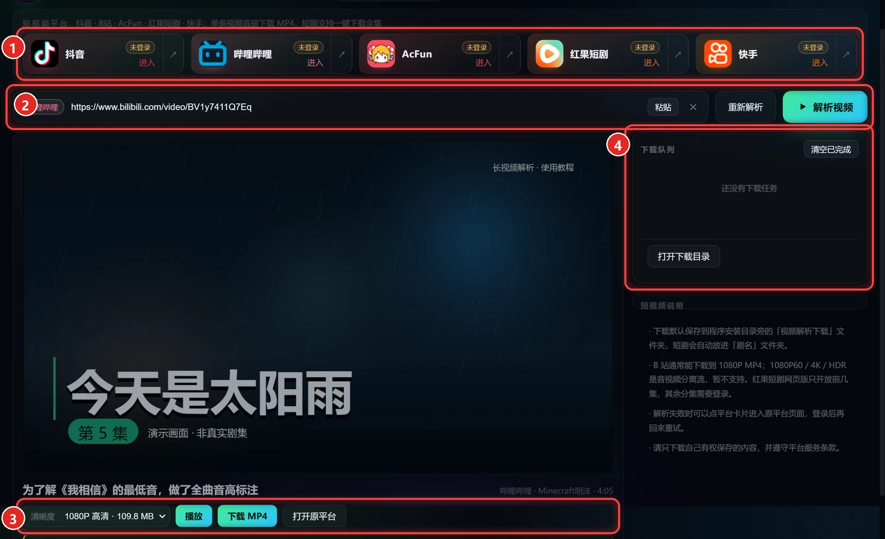
① 平台卡片（右上角是登录状态） ② 粘贴链接 + 解析视频 ③ 视频下方的清晰度 / 下载 MP4 ④ 右侧下载队列与短视频历史
- 支持抖音、哔哩哔哩、AcFun、红果短剧、快手；分享短链（v.douyin.com、b23.tv、v.kuaishou.com）可以直接粘贴。
- 解析成功后视频在上方播放，清晰度和「播放 / 下载 MP4 / 打开原平台」在视频下方；内容变长时整个页面一起上下滚动，没有单独的小滚动条。
- 短剧 / 合集会在下方列出分集：点「全选」→「一键下载全集」，会自动创建以剧名命名的文件夹，分集按集数命名保存；已经下过的同名文件会自动跳过，不会重复下第二遍。
- 红果短剧网页版只提供前几集，后面的分集平台播放页直接返回 404（登录也不会放开），完整剧集需要用红果 App；「一键下载全集」只会列出能下载的集数。
- B 站登录后通常能下载到 1080P：1080P 是音视频分离流，程序会自动合并成一个 MP4（不需要 ffmpeg）；1080P60 / 4K 等大会员画质暂不支持。
- 右上角「登录与限制」按平台列出限制，并可直接点「去登录」（已登录的平台按钮会变灰）；解析前如果检测到未登录，也会先提醒一次。
- 解析失败时，可以先进入原平台页面确认视频能正常播放，再复制当前页面链接回来重试。
- 右侧「短视频历史」和长视频观看历史分开存：解析成功的视频会记一条，点一下可以直接重新解析，也能单条删除或清空。
短视频和长视频共用程序安装目录旁的「音视频解析下载」文件夹（老用户沿用「视频解析下载」），但短视频按平台名保存、短剧单独放在剧名文件夹里，不会混在一起；音乐单独放在「音乐」子文件夹。
11投屏到大屏
解析成功后，播放区右上角的「投屏」可以把画面送到电视、投影或机顶盒；电视上没有 DLNA 接收端时，手机扫码或用电视浏览器打开弹窗里的地址也能播放。
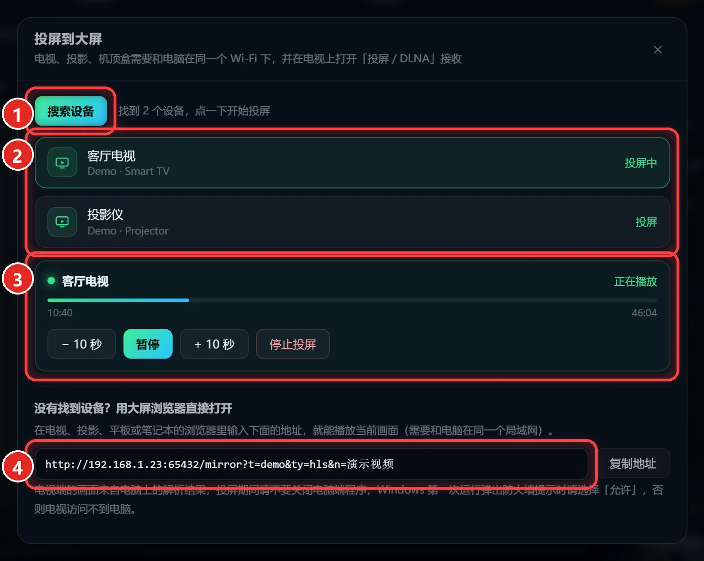
① 搜索设备 ② 点一下投屏到这个设备 ③ 投屏中的播放控制 ④ 手机扫码 / 电视浏览器直接打开的地址
- 电脑和电视必须连同一个 Wi-Fi；电脑上如果弹出防火墙提示，请选择「允许」。
- 点「搜索设备」后，同一网络里的电视 / 投影会出现在列表里；点设备名就开始投屏，本机自动暂停，避免两边同时出声。
- 手机和电脑在同一个 Wi-Fi 时，直接扫弹窗里的二维码，就能在手机浏览器打开当前画面；也可以复制地址发到手机 / 平板。大屏页点「全屏播放」后会隐藏页头页脚、视频铺满屏幕。
- 789 等网页解析线路：先在网页里点一下播放，等画面出来后再点「投屏」，程序会从网页播放器请求里抓真实 m3u8/mp4 再推给电视；万一抓不到，弹窗会生成当前解析页的二维码，手机扫码可直接用浏览器打开。
- 投屏后可以暂停 / 继续、快退 / 快进 10 秒、停止投屏；换集或换清晰度会自动把新的画面重新推到电视上。
- 电视没有「投屏 / DLNA」接收端时，把弹窗里的地址复制到电视浏览器（或平板）打开，也能直接播；这个地址需要电脑端保持运行。
- 网页解析线路（第三方解析页）拿不到真实流地址，投屏按钮是灰的；换到内置播放器线路再投屏。
投屏期间电脑端不要退出软件、也不要切到别的视频：电视是从电脑这里的代理拉流，软件关掉画面就会停。
12音乐搜索、歌词与下载
顶部切到「音乐」，就进入和长视频 / 短视频完全独立的一套界面。五个平台的歌都能搜，播放器按原平台的样式做：大封面、模糊背景、逐行滚动的歌词，右侧是搜索结果、播放记录、收藏和下载记录。
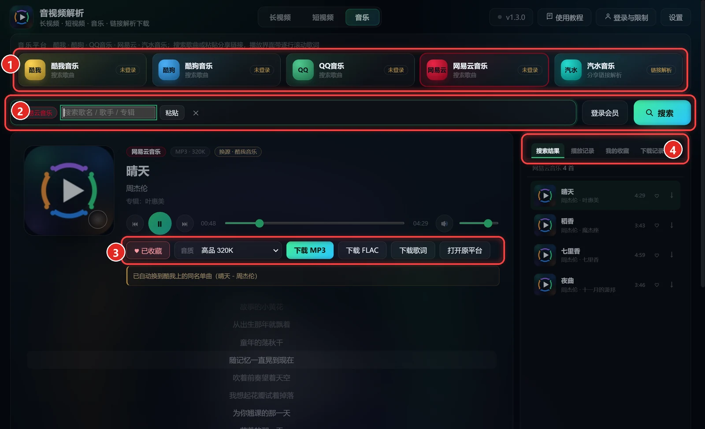
① 五个音乐平台，点卡片切换 ② 搜索 / 粘贴汽水分享链接 ③ 收藏、音质、下载 MP3 / FLAC / 歌词 ④ 搜索结果 / 播放记录 / 收藏 / 下载记录
- 选平台 → 输入歌名 / 歌手 → 点「搜索」；右侧点歌曲开始播放。
- 播放器下方歌词会跟着进度一行一行滚动，点任意一行可以跳到那一句。
- 「♡ 收藏」把歌收进「我的收藏」；每播放一首会自动写进「播放记录」，和长视频的观看历史分开。
- 下载支持 MP3 和 FLAC（平台有损 / 无损权限不同，没有无损时会自动改用 320K MP3），歌词会一起保存成同名 .lrc 文件，统一放在「音乐」文件夹里、按平台分目录。
- 会员歌曲：点「登录会员」在弹出的平台官网登录，关闭窗口后登录状态会保存；没有会员时，程序会先通过公开无损音乐源（flac.music.hi.cn）找同名 FLAC / 320K，再退到酷我同名源，播放器上会标「换源」。
- 汽水音乐网页版不开放搜索，请在汽水 App 里复制歌曲分享链接再粘贴解析；网页版只给 30 秒试听，完整版会尝试换源。
音乐和视频下载分开存放：音乐在「音视频解析下载\音乐\平台名\歌名 - 歌手.mp3」，旁边就是同名的 .lrc 歌词。